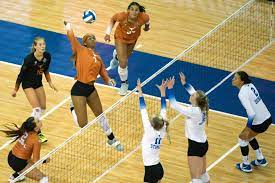

Volleyball, a fast-paced and exciting team sport, has captured the hearts of millions worldwide. Whether it's played on sunny beaches or indoor courts, volleyball's appeal lies in its simplicity, strategic gameplay, and ability to create a sense of camaraderie among players. In this article, we'll explore the history, rules, benefits, and popularity of volleyball, delving into why it remains a beloved sport enjoyed by people of all ages. Volleyball traces its roots back to the late 19th century when William G. Morgan, a physical education instructor, sought to create a sport that combined elements of basketball, baseball, tennis, and handball. Morgan's invention was initially known as "mintonette," but its name was eventually changed to "volleyball" due to the nature of the gameplay, where the ball was volleyed back and forth over the net.At its core, volleyball epitomizes the essence of teamwork. No player can single-handedly dominate the game; instead, success lies in the seamless collaboration and synchronization among team members. Effective communication, trust, and understanding are crucial components of a successful volleyball team. Players learn to rely on their teammates and support each other in both moments of triumph and adversity. This camaraderie extends beyond the court, fostering strong bonds among players. In volleyball, each individual's strengths complement others' weaknesses, creating a powerful synergy that is greater than the sum of its parts. This profound sense of unity not only enhances the on-court performance but also teaches players valuable life skills of cooperation and respect.
Volleyball is played on a rectangular court, divided by a net into two equal sides. The objective is simple: each team tries to score points by sending the ball over the net, aiming to make it land within the opposing team's court while preventing the opponents from doing the same. Teams can touch the ball up to three times before sending it back over the net, with common techniques including passing, setting, spiking, and blocking. The game is usually played in a best-of-five format, with each set being won by the first team to reach 25 points (15 points in the deciding set). In recent years, rally scoring has become increasingly popular, meaning that points can be scored on every play, regardless of which team served the ball.The sport quickly gained popularity, spreading throughout the United States and internationally. By the 1960s, volleyball had become a prominent feature in the Olympic Games, cementing its status as a global sport.
Volleyball offers numerous physical, mental, and social benefits for its players, making it an excellent choice for fitness enthusiasts and recreational athletes alike. Some of the key advantages include: Physical Fitness: Volleyball is a full-body workout that enhances cardiovascular health, improves hand-eye coordination, and strengthens muscles in the legs, core, and upper body. Team Building: Volleyball is a team sport that requires cooperation, communication, and trust among players, fostering a strong sense of teamwork and camaraderie.Participating in volleyball offers numerous physical and mental benefits. On a physical level, volleyball is an excellent cardiovascular workout that improves endurance, agility, and overall body coordination. Jumping and spiking contribute to building leg muscles, while diving and lunging work on flexibility and core strength. The sport also enhances hand-eye coordination, which is essential for ball control. Furthermore, volleyball fosters mental acuity and concentration. Players must anticipate their opponents' moves, read their actions, and react promptly to counter them effectively. This mental engagement promotes quick decision-making, problem-solving skills, and strategic thinking. Moreover, working as part of a team cultivates cooperation, communication, and leadership abilities, which are invaluable both on and off the court. Reflexes and Agility: The fast-paced nature of volleyball hones players' reflexes and agility, improving their ability to react quickly to changing situations. Stress Relief: Engaging in sports like volleyball can reduce stress levels and promote mental well-being through the release of endorphins, the brain's natural mood boosters.
Volleyball's popularity has soared over the years, becoming one of the most played and watched sports in the world. It boasts a vast international following, with professional leagues, tournaments, and club competitions held in various countries. FIVB (Fédération Internationale de Volleyball), the sport's governing body, organizes prestigious events such as the Volleyball World Cup and the World Championships, attracting top talent and passionate fans from all corners of the globe.
 Volleyball is played on a rectangular court, divided by a net into two equal halves. The objective of the game is simple yet challenging: each team strives to score points by sending the ball over the net and into the opponent's court, while simultaneously preventing the opposing team from doing the same. Players are allowed to touch the ball up to three times to control its trajectory, leading to a mesmerizing display of skills, reflexes, and coordination. Volleyball's enduring appeal lies in its accessibility, dynamic gameplay, and the sense of community it fosters among players. Whether you're an amateur looking for a recreational sport or a seasoned athlete striving for greatness, volleyball offers a unique blend of fun and fitness that keeps people coming back for more. So, grab a ball, find a court, and experience the joy and excitement of volleyball firsthand!
In conclusion, volleyball is more than just a sport; it is a testament to human athleticism, teamwork, and ingenuity. Its humble beginnings as "mintonette" have blossomed into a global sensation that captivates audiences worldwide. Through its dynamic gameplay, mental and physical benefits, and positive influence on individuals and communities, volleyball remains a cherished and cherished activity. As long as there are teams leaping to new heights, players diving for those impossible saves, and communities coming together to cheer on their champions, volleyball will continue to thrive as a testament to the indomitable spirit of human endeavor.